pacman::p_load(tidyverse)Hands-on Exercise 01
Programming Elegant DataVis with ggplot2
Introducing Tidyverse
tidyverse is an opinionated collection of R packages designed for data science. All packages share an underlying design philosophy, grammar, and data structures.
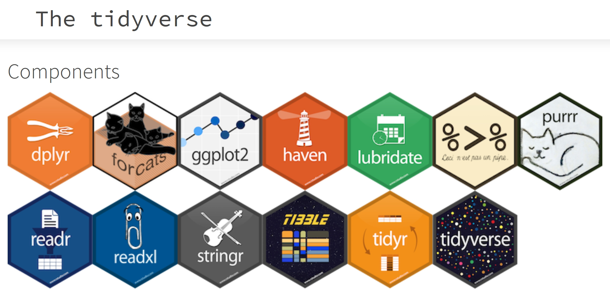
Core Tidyverse Packages
dplyr is a grammar of data manipulation, providing a consistent set of verbs that help you solve the most common data manipulation challenges.
tidyr helps R users to create tidy data.
stringr provides a cohesive set of functions designed to make working with strings as easy as possible.
forcats provides a suite of tools that solve common problems with factors, including changing the order of levels or the values.
readr provides a fast and friendly way to read rectangular data (like csv, tsv, and fwf).
tibble is a modern reimagining of the data.frame, keeping what time has proven to be effective, and throwing out what is not.
ggplot2 is a system for declaratively creating graphics, based on The Grammar of Graphics.
purrr enhances R’s functional programming (FP) toolkit by providing a complete and consistent set of tools for working with functions and vectors.
Data Science Workflow with Tidyverse
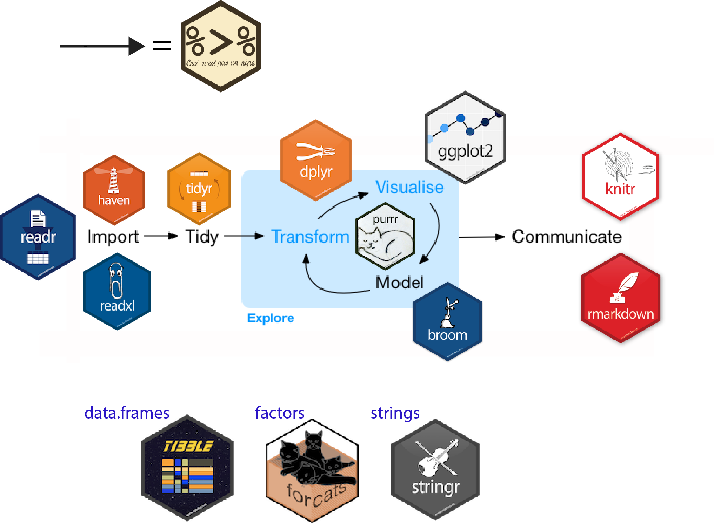
Reference: Introduction to the Tidyverse: How to be a tidy data scientist.
Getting Started
Installing and loading the required libraries
Before we get started, it is important for us to ensure that the required R packages have been installed. If yes, we will load the R packages. If they have yet to be installed, we will install the R packages and load them onto R environment.
Note
The code chunk on the right assumes that you already have pacman package installed. If not, please go ahead install pacman first.
Importing Data
The code chunk below imports exam_data.csv into R environment by using read_csv() function of readr package.
readr is one of the tidyverse package.
exam_data <- read_csv("data/Exam_data.csv")Rows: 322 Columns: 7
── Column specification ────────────────────────────────────────────────────────
Delimiter: ","
chr (4): ID, CLASS, GENDER, RACE
dbl (3): ENGLISH, MATHS, SCIENCE
ℹ Use `spec()` to retrieve the full column specification for this data.
ℹ Specify the column types or set `show_col_types = FALSE` to quiet this message.Year end examination grades of a cohort of primary 3 students from a local school.
There are a total of seven attributes. Four of them are categorical data type and the other three are in continuous data type.
The categorical attributes are: ID, CLASS, GENDER and RACE.
The continuous attributes are: MATHS, ENGLISH and SCIENCE.
Introducing ggplot
An R package for declaratively creating data-driven graphics based on The Grammar of Graphics
It is part of the tidyverse family specially designed for visual exploration and communication.
For more detail, visit ggplot2 link.
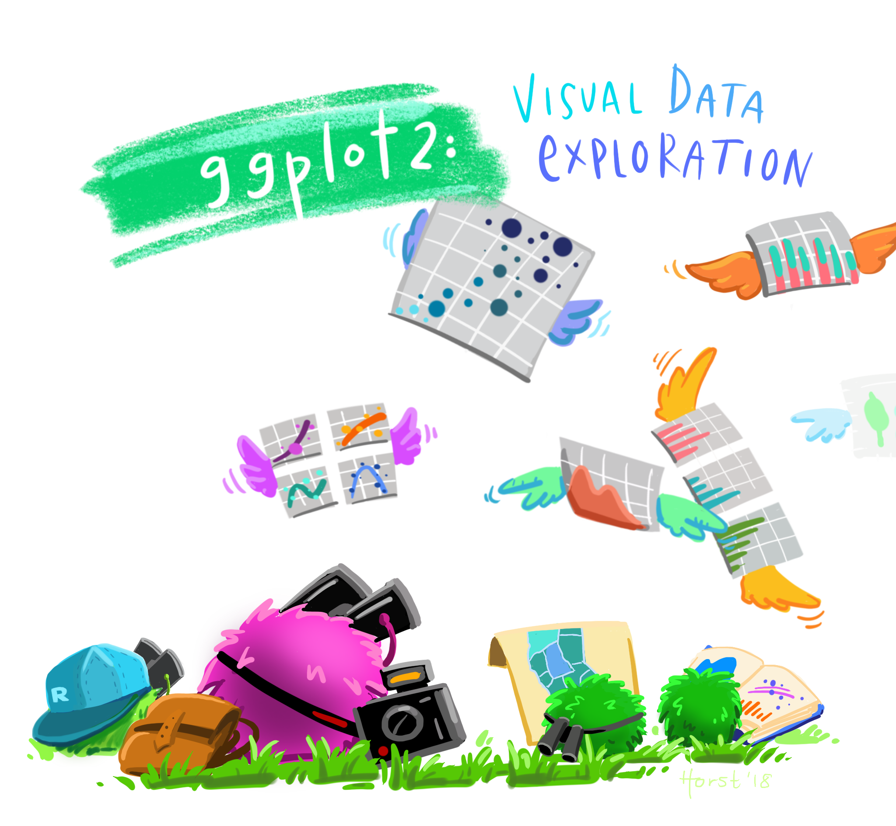
R Graphics VS ggplot
R Graphics
hist(exam_data$MATHS)
ggplot2
ggplot(data=exam_data, aes(x = MATHS)) +
geom_histogram(bins=10,
boundary = 100,
color="black",
fill="grey") +
ggtitle("Distribution of Maths scores")
Then, why ggplot2
Note
The transferable skills from ggplot2 are not the idiosyncrasies of plotting syntax, but a powerful way of thinking about visualisation, as a way of mapping between variables and the visual properties of geometric objects that you can perceive.
ggplot(data=exam_data, aes(x = MATHS)) +
geom_histogram(bins=10,
boundary = 100,
color="black",
fill="grey") +
ggtitle("Distribution of Maths scores")
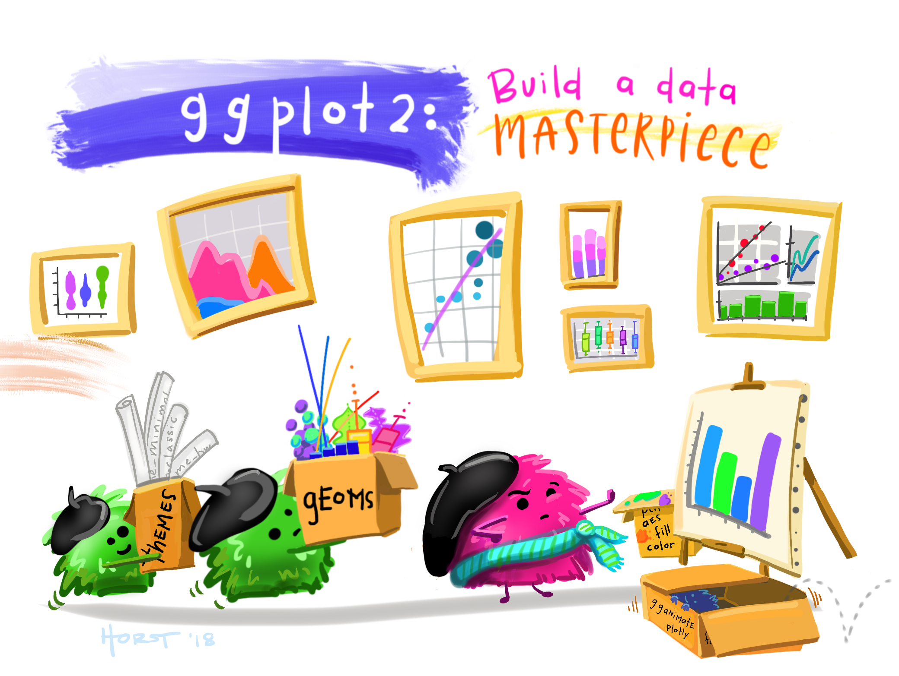
Grammar of Graphics
Wilkinson, L. (1999) Grammar of Graphics, Springer.
The grammar of graphics is an answer to a question:
What is a statistical graphic?
Grammar of graphics defines the rules of structuring mathematical and aesthetic elements into a meaningful graph.
Two principles
Graphics = distinct layers of grammatical elements
Meaningful plots through aesthetic mapping
A good grammar will allow us to gain insight into the composition of complicated graphics, and reveal unexpected connections between seemingly different graphics (Cox 1978).
A grammar provides a strong foundation for understanding a diverse range of graphics.
A grammar may also help guide us on what a well-formed or correct graphic looks like, but there will still be many grammatically correct but nonsensical graphics.
Essential Grammatical Elements in ggplot2
A Layered Grammar of Graphics
Data: The dataset being plotted.
Aesthetics take attributes of the data and use them to influence visual characteristics, such as position, colours, size, shape, or transparency.
Geometrics: The visual elements used for our data, such as point, bar or line.
Facets split the data into subsets to create multiple variations of the same graph (paneling, multiple plots).
Statistics, statiscal transformations that summarise data (e.g. mean, confidence intervals).
Coordinate systems define the plane on which data are mapped on the graphic.
Themes modify all non-data components of a plot, such as main title, sub-title, y-aixs title, or legend background.
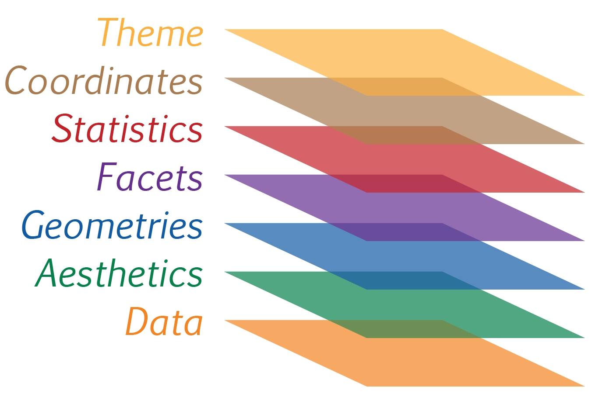
Reference: Hadley Wickham (2010) “A layered grammar of graphics.” Journal of Computational and Graphical Statistics, vol. 19, no. 1, pp. 3–28.
The ggplot() function and data argument
Let us call the
ggplot()function using the code chunk on the right.Notice that a blank canvas appears.
ggplot()initializes a ggplot object.The data argument defines the dataset to be used for plotting.
If the dataset is not already a data.frame, it will be converted to one by
fortify().
ggplot(data=exam_data)
The Aesthetic mappings
The aesthetic mappings take attributes of the data and and use them to influence visual characteristics, such as position, colour, size, shape, or transparency.
Each visual characteristic can thus encode an aspect of the data and be used to convey information.
All aesthetics of a plot are specified in the
aes()function call (in later part of this lesson, you will see that each geom layer can have its own aes specification)
Working with aes()
- The code chunk on the right add the aesthetic element into the plot.
ggplot(data=exam_data,
aes(x= MATHS))
- Notice that ggplot includes the x-axis and the axis’s label.
Geometric Objects: geom
Geometric objects are the actual marks we put on a plot. Examples include:
geom_point for drawing individual points (e.g., a scatter plot)
geom_line for drawing lines (e.g., for a line charts)
geom_smooth for drawing smoothed lines (e.g., for simple trends or approximations)
geom_bar for drawing bars (e.g., for bar charts)
geom_histogram for drawing binned values (e.g. a histogram)
geom_polygon for drawing arbitrary shapes
geom_map for drawing polygons in the shape of a map! (You can access the data to use for these maps by using the map_data() function).
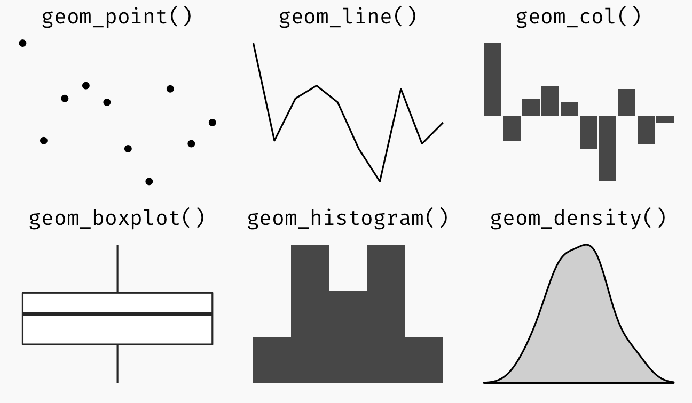
A plot must have at least one geom; there is no upper limit. You can add a geom to a plot using the + operator.
For complete list, please refer to here.
Geometric Objects: geom_bar
The code chunk below plots a bar chart by using geom_bar().
ggplot(data=exam_data,
aes(x=RACE)) +
geom_bar()
Geometric Objects: geom_dotplot
In a dot plot, the width of a dot corresponds to the bin width (or maximum width, depending on the binning algorithm), and dots are stacked, with each dot representing one observation.
Warning
The y scale is not very useful, in fact it is very misleading.
In the code chunk below, geom_dotplot() of ggplot2 is used to plot a dot plot.
ggplot(data=exam_data,
aes(x = MATHS)) +
geom_dotplot(dotsize = 0.5)Bin width defaults to 1/30 of the range of the data. Pick better value with
`binwidth`.
The code chunk below performs the following two steps:
scale_y_continuous()is used to turn off the y-axis, andbinwidth argument is used to change the binwidth to 2.5.
ggplot(data=exam_data,
aes(x = MATHS)) +
geom_dotplot(binwidth=2.5,
dotsize = 0.5) +
scale_y_continuous(NULL,
breaks = NULL) 
Geometric Objects: geom_histogram()
In the code chunk below, geom_histogram() is used to create a simple histogram by using values in MATHS field of exam_data.
ggplot(data=exam_data,
aes(x = MATHS)) +
geom_histogram() `stat_bin()` using `bins = 30`. Pick better value with `binwidth`.
Note
Note that the default bin is 30.
Modifying a geometric object by changing geom()
In the code chunk below,
bins argument is used to change the number of bins to 20,
fill argument is used to shade the histogram with light blue color, and
color argument is used to change the outline colour of the bars in black
ggplot(data=exam_data,
aes(x= MATHS)) +
geom_histogram(bins=20,
color="black",
fill="light blue") 
Modifying a geometric object by changing aes()
- The code chunk below changes the interior colour of the histogram (i.e. fill) by using sub-group of aesthetic().
ggplot(data=exam_data,
aes(x= MATHS,
fill = GENDER)) +
geom_histogram(bins=20,
color="grey30")
Note
This approach can be used to colour, fill and alpha of the geometric.
Geometric Objects: geom-density
geom-density() computes and plots kernel density estimate, which is a smoothed version of the histogram.
It is a useful alternative to the histogram for continuous data that comes from an underlying smooth distribution.
The code below plots the distribution of Maths scores in a kernel density estimate plot.
ggplot(data=exam_data,
aes(x = MATHS)) +
geom_density() 
Reference: Kernel density estimation
The code chunk below plots two kernel density lines by using color or fill arguments of aes()
ggplot(data=exam_data,
aes(x = MATHS,
colour = GENDER)) +
geom_density()
Geometric Objects: geom_boxplot
geom_boxplot()displays continuous value list. It visualises five summary statistics (the median, two hinges and two whiskers), and all “outlying” points individually.The code chunk below plots boxplots by using geom_boxplot().]
ggplot(data=exam_data,
aes(y = MATHS,
x= GENDER)) +
geom_boxplot() 
Notches are used in box plots to help visually assess whether the medians of distributions differ. If the notches do not overlap, this is evidence that the medians are different.
The code chunk below plots the distribution of Maths scores by gender in notched plot instead of boxplot.
ggplot(data=exam_data,
aes(y = MATHS,
x= GENDER)) +
geom_boxplot(notch=TRUE)
Reference: Notched Box Plots.
geom objects can be combined
The code chunk below plots the data points on the boxplots by using both geom_boxplot() and geom_point().
ggplot(data=exam_data,
aes(y = MATHS,
x= GENDER)) +
geom_boxplot() + #<<
geom_point(position="jitter", #<<
size = 0.5) #<<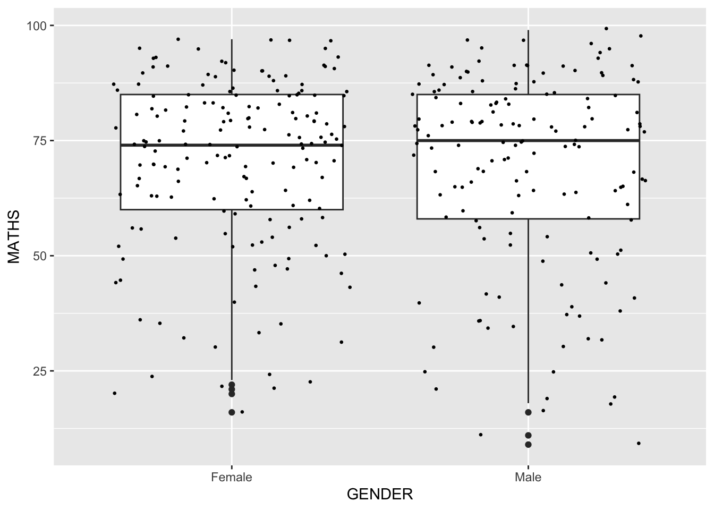
Geometric Objects: geom_violin
geom_violin is designed for creating violin plot. Violin plots are a way of comparing multiple data distributions. With ordinary density curves, it is difficult to compare more than just a few distributions because the lines visually interfere with each other. With a violin plot, it’s easier to compare several distributions since they’re placed side by side.
The code below plot the distribution of Maths score by gender in violin plot.
ggplot(data=exam_data,
aes(y = MATHS,
x= GENDER)) +
geom_violin()
Geometric Objects: geom_violin() and geom_boxplot()
The code chunk below combined a violin plot and a boxplot to show the distribution of Maths scores by gender.
ggplot(data=exam_data,
aes(y = MATHS,
x= GENDER)) +
geom_violin(fill="light blue") +
geom_boxplot(alpha=0.5) 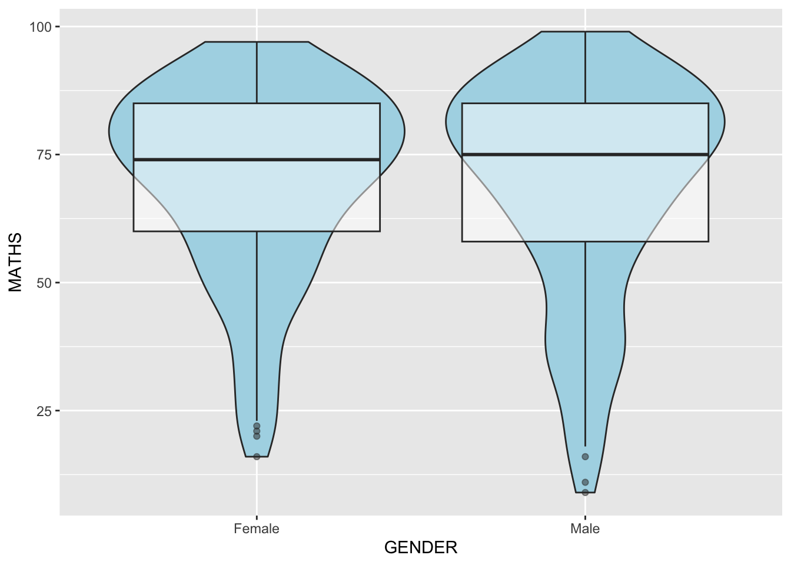
Geometric Objects: geom_point()
geom_point()is especially useful for creating scatterplot.The code chunk below plots a scatterplot showing the Maths and English grades of pupils by using
geom_point().
ggplot(data=exam_data,
aes(x= MATHS,
y=ENGLISH)) +
geom_point() 
Statistics, stat
The Statistics functions statistically transform data, usually as some form of summary. For example:
frequency of values of a variable (bar graph)
a mean
a confidence limit
There are two ways to use these functions:
add a
stat_()function and override the default geom, oradd a
geom_()function and override the default stat.
Working with stat
The boxplots on the right are incomplete because the positions of the means were not shown.
Next two slides will show you how to add the mean values on the boxplots.
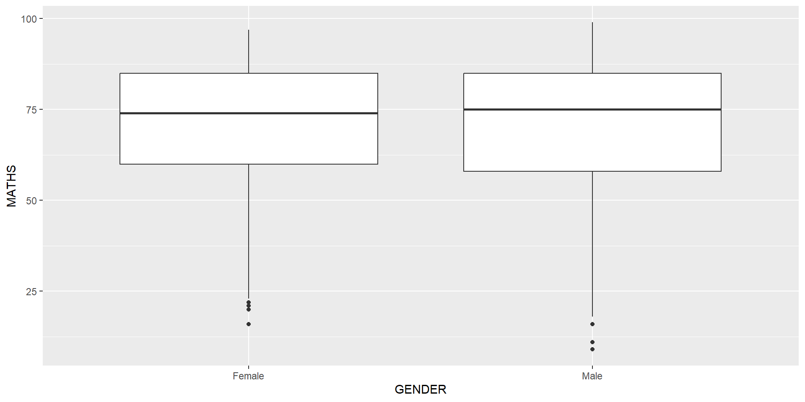
Working with stat - the stat_summary() method
The code chunk below adds mean values by using stat_summary() function and overriding the default geom.
ggplot(data=exam_data,
aes(y = MATHS, x= GENDER)) +
geom_boxplot() +
stat_summary(geom = "point",
fun.y="mean",
colour ="red",
size=4) Warning: The `fun.y` argument of `stat_summary()` is deprecated as of ggplot2 3.3.0.
ℹ Please use the `fun` argument instead.
Working with stat - the geom() method
The code chunk below adding mean values by using geom_() function and overriding the default stat.
ggplot(data=exam_data,
aes(y = MATHS, x= GENDER)) +
geom_boxplot() +
geom_point(stat="summary",
fun.y="mean",
colour ="red",
size=4) Warning in geom_point(stat = "summary", fun.y = "mean", colour = "red", :
Ignoring unknown parameters: `fun.y`No summary function supplied, defaulting to `mean_se()`
How to add a best fit curve on a scatterplot?
The scatterplot on the right shows the relationship of Maths and English grades of pupils.
The interpretability of this graph can be improved by adding a best fit curve.

In the code chunk below, geom_smooth() is used to plot a best fit curve on the scatterplot.
- The default method used is loess.
ggplot(data=exam_data,
aes(x= MATHS, y=ENGLISH)) +
geom_point() +
geom_smooth(size=0.5)Warning: Using `size` aesthetic for lines was deprecated in ggplot2 3.4.0.
ℹ Please use `linewidth` instead.`geom_smooth()` using method = 'loess' and formula = 'y ~ x'
The default smoothing method can be overridden as shown below.
ggplot(data=exam_data,
aes(x= MATHS,
y=ENGLISH)) +
geom_point() +
geom_smooth(method=lm,
size=0.5)`geom_smooth()` using formula = 'y ~ x'
Facets
Facetting generates small multiples (sometimes also called trellis plot), each displaying a different subset of the data.
Facets are an alternative to aesthetics for displaying additional discrete variables.
ggplot2 supports two types of factes, namely:
facet_grid()andfacet_wrap.
facet_wrap()
facet_wrapwraps a 1d sequence of panels into 2d.This is generally a better use of screen space than facet_grid because most displays are roughly rectangular.
Working with facet_wrap()
The code chunk below plots a trellis plot using facet-wrap().
ggplot(data=exam_data,
aes(x= MATHS)) +
geom_histogram(bins=20) +
facet_wrap(~ CLASS)facet_grid() function
facet_grid()forms a matrix of panels defined by row and column facetting variables.It is most useful when you have two discrete variables, and all combinations of the variables exist in the data.
Working with facet_grid()
The code chunk below plots a trellis plot using facet_grid().
ggplot(data=exam_data,
aes(x= MATHS)) +
geom_histogram(bins=20) +
facet_grid(~ CLASS)
Working with facet
Note
Plot a trellis boxplot looks similar to the figure below.
The solution:
ggplot(data=exam_data,
aes(y = MATHS, x= CLASS)) +
geom_boxplot() +
facet_grid(~ GENDER)
Working with facet
Note
Plot a trellis boxplot looks similar to the figure below.
The solution:
ggplot(data=exam_data,
aes(y = MATHS, x= CLASS)) +
geom_boxplot() +
facet_grid(GENDER ~.)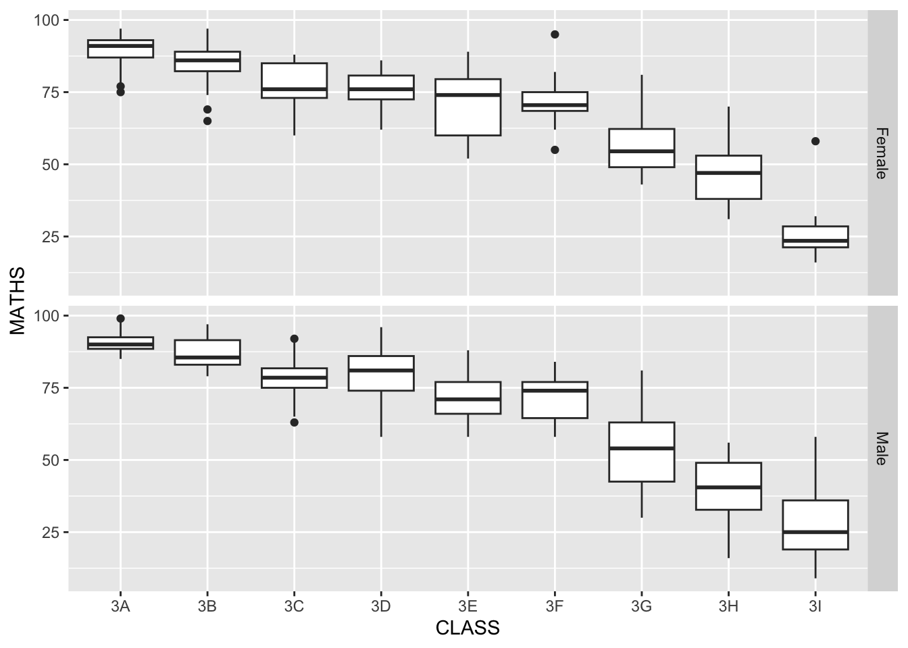
Working with facet
Note
Plot a trellis boxplot looks similar to the figure below.
The solution:
ggplot(data=exam_data,
aes(y = MATHS, x= GENDER)) +
geom_boxplot() +
facet_grid(GENDER ~ CLASS)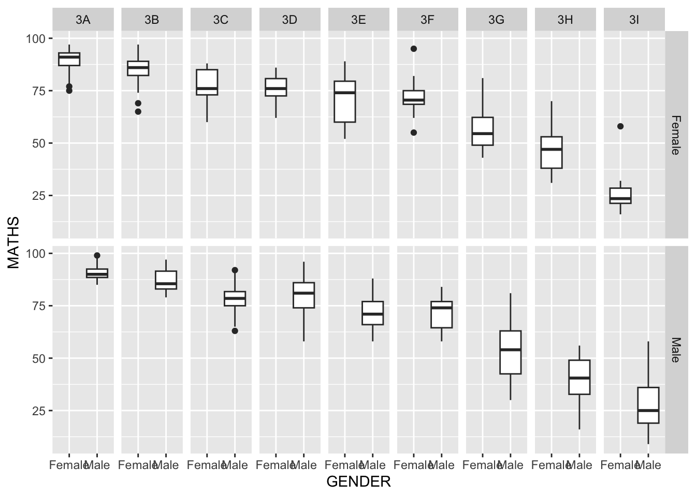
Coordinates
The Coordinates functions map the position of objects onto the plane of the plot.
There are a number of different possible coordinate systems to use, they are:
coord_cartesian(): the default cartesian coordinate systems, where you specify x and y values (e.g. allows you to zoom in or out).coord_flip(): a cartesian system with the x and y flipped.coord_fixed(): a cartesian system with a “fixed” aspect ratio (e.g. 1.78 for a “widescreen” plot).coord_quickmap(): a coordinate system that approximates a good aspect ratio for maps.
Working with Coordinate
By the default, the bar chart of ggplot2 is in vertical form.
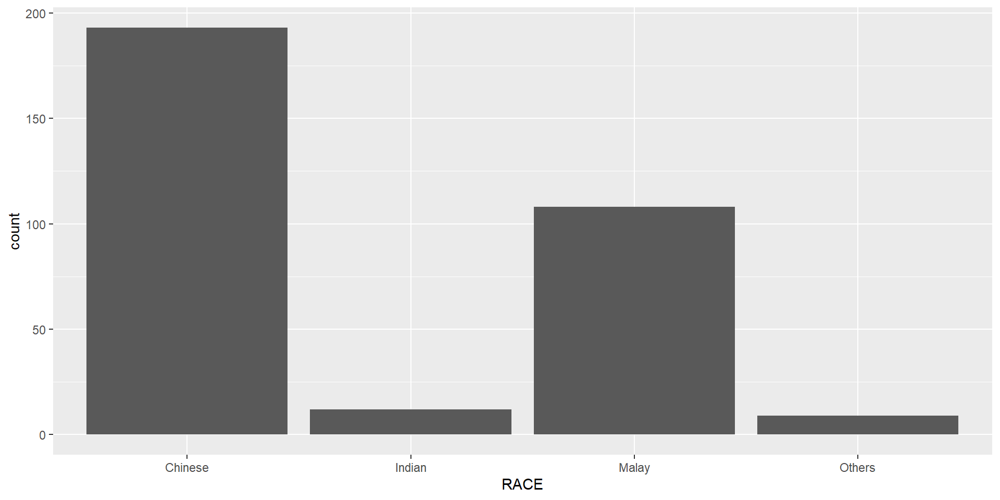
The code chunk below flips the horizontal bar chart into vertical bar chart by using coord_flip().
ggplot(data=exam_data,
aes(x=RACE)) +
geom_bar() +
coord_flip()How to change to the y- and x-axis range?
The scatterplot on the right is slightly misleading because the y-aixs and x-axis range are not equal.
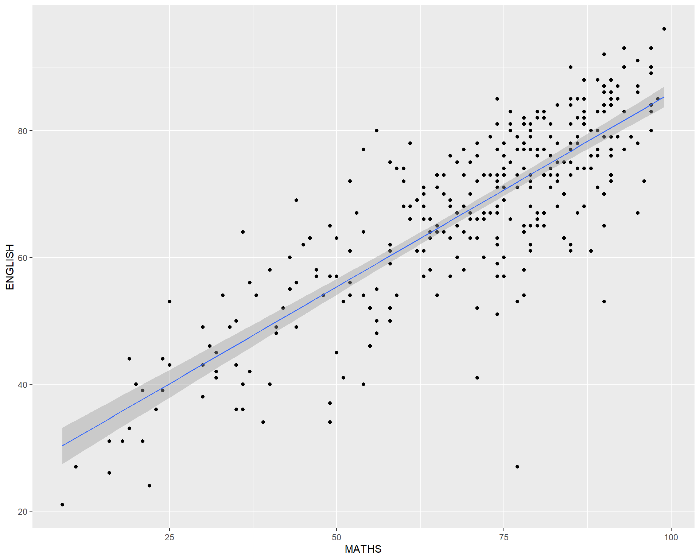
The code chunk below fixed both the y-axis and x-axis range from 0-100.
ggplot(data=exam_data,
aes(x= MATHS, y=ENGLISH)) +
geom_point() +
geom_smooth(method=lm,
size=0.5) +
coord_cartesian(xlim=c(0,100),
ylim=c(0,100))`geom_smooth()` using formula = 'y ~ x'
Themes
Themes control elements of the graph not related to the data. For example:
background colour
size of fonts
gridlines
colour of labels
Built-in themes include:
theme_gray()(default)theme_bw()theme_classic()
A list of theme can be found at this link.
Each theme element can be conceived of as either a line (e.g. x-axis), a rectangle (e.g. graph background), or text (e.g. axis title).
Working with theme
The code chunk below plot a horizontal bar chart using theme_gray().
ggplot(data=exam_data,
aes(x=RACE)) +
geom_bar() +
coord_flip() +
theme_gray()
A horizontal bar chart plotted using theme_classic().
ggplot(data=exam_data,
aes(x=RACE)) +
geom_bar() +
coord_flip() +
theme_classic()
A horizontal bar chart plotted using theme_minimal().
ggplot(data=exam_data,
aes(x=RACE)) +
geom_bar() +
coord_flip() +
theme_minimal()
Note
Plot a horizontal bar chart looks similar to the figure below.
- Changing the colors of plot panel background of
theme_minimal()to light blue and the color of grid lines to white.

The solution
ggplot(data=exam_data,
aes(x=RACE)) +
geom_bar() +
coord_flip() +
theme_minimal() +
theme(panel.background = element_rect(
fill = "lightblue",
colour = "lightblue",
size = 0.5,
linetype = "solid"),
panel.grid.major = element_line(
size = 0.5,
linetype = 'solid',
colour = "white"),
panel.grid.minor = element_line(
size = 0.25,
linetype = 'solid',
colour = "white"))Warning: The `size` argument of `element_rect()` is deprecated as of ggplot2 3.4.0.
ℹ Please use the `linewidth` argument instead.Warning: The `size` argument of `element_line()` is deprecated as of ggplot2 3.4.0.
ℹ Please use the `linewidth` argument instead.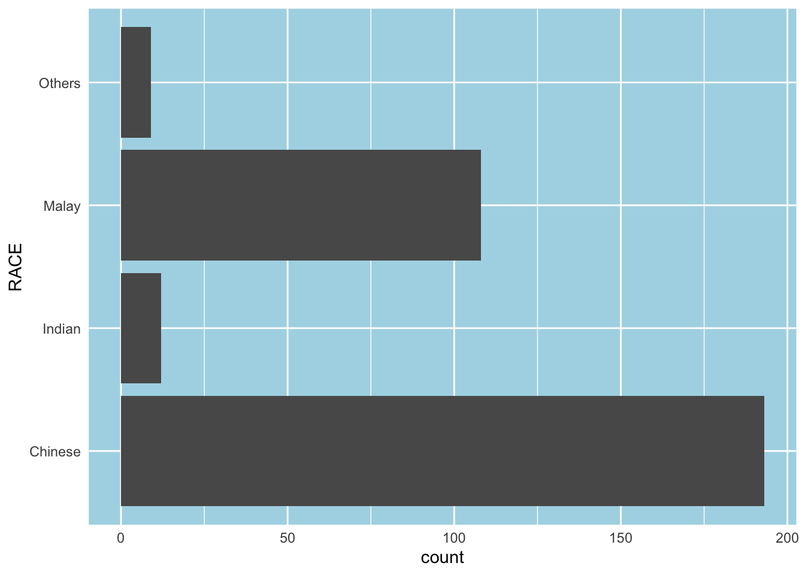
Designing Data-drive Graphics for Analysis I
The original design
A simple vertical bar chart for frequency analysis. Critics:
y-aixs label is not clear (i.e. count)
To support effective comparison, the bars should be sorted by their resepctive frequencies.
For static graph, frequency values should be added to provide addition information.
Important
With reference to the critics on the earlier slide, create a makeover looks similar to the figure on the right.
ggplot(data=exam_data,
aes(x=reorder(RACE,RACE,
function(x)-length(x))))+
geom_bar() +
ylim(0,220) +
geom_text(stat="count",
aes(label=paste0(..count.., ", ",
round(..count../sum(..count..)*100,
1), "%")),
vjust=-1) +
xlab("Race") +
ylab("No. of\nPupils") +
theme(axis.title.y=element_text(angle = 0))Warning: The dot-dot notation (`..count..`) was deprecated in ggplot2 3.4.0.
ℹ Please use `after_stat(count)` instead.
The makeover design
This code chunk uses fct_infreq() of forcats package.
exam_data %>%
mutate(RACE = fct_infreq(RACE)) %>%
ggplot(aes(x = RACE)) +
geom_bar()+
ylim(0,220) +
geom_text(stat="count",
aes(label=paste0(..count.., ", ",
round(..count../sum(..count..)*100,
1), "%")),
vjust=-1) +
xlab("Race") +
ylab("No. of\nPupils") +
theme(axis.title.y=element_text(angle = 0))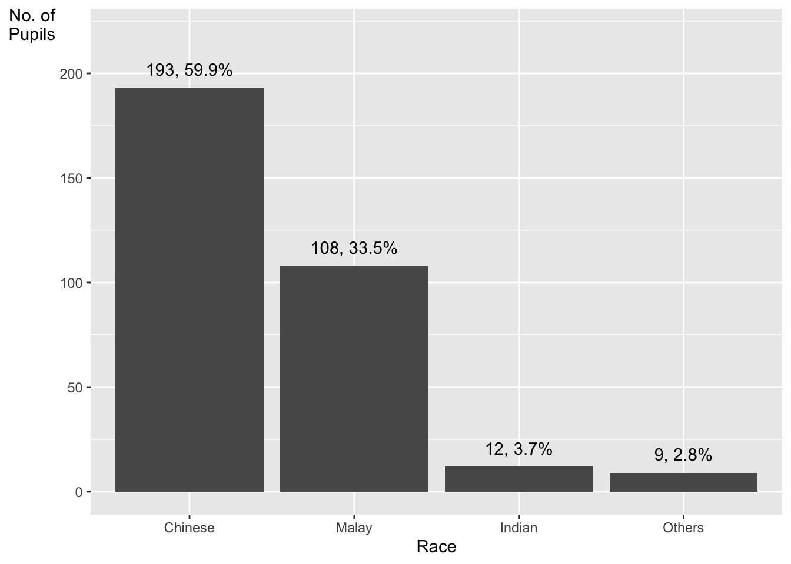
Credit: I learned this trick from Getting things into the right order of Prof. Claus O. Wilke, the author of Fundamentals of Data Visualization
Designing Data-drive Graphics for Analysis II
The original design
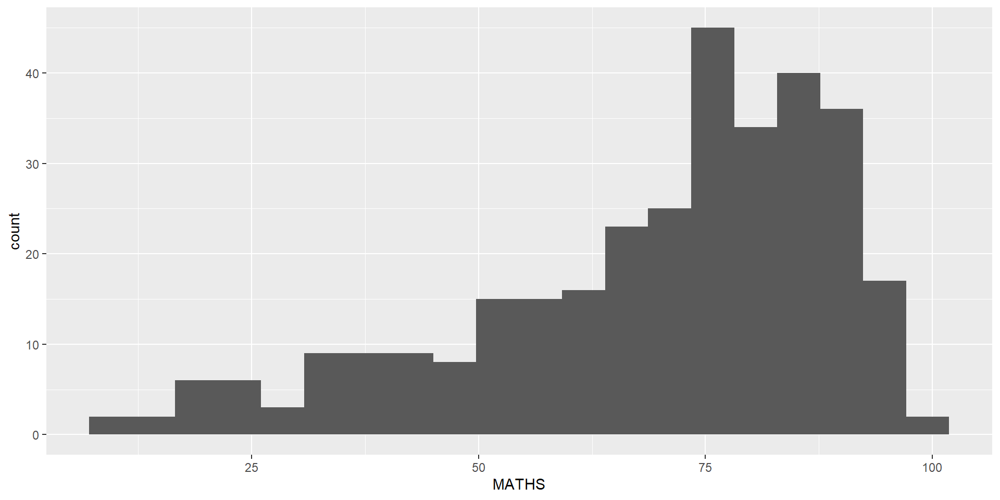
Note
Adding mean and median lines on the histogram plot.
Change fill color and line color
The code chunk:
ggplot(data=exam_data,
aes(x= MATHS)) +
geom_histogram(bins=20,
color="black",
fill="light blue") +
geom_vline(aes(xintercept=mean(MATHS,
na.rm=T)),
color="red",
linetype="dashed",
size=1) +
geom_vline(aes(xintercept=median(MATHS,
na.rm=T)),
color="grey30",
linetype="dashed",
size=1)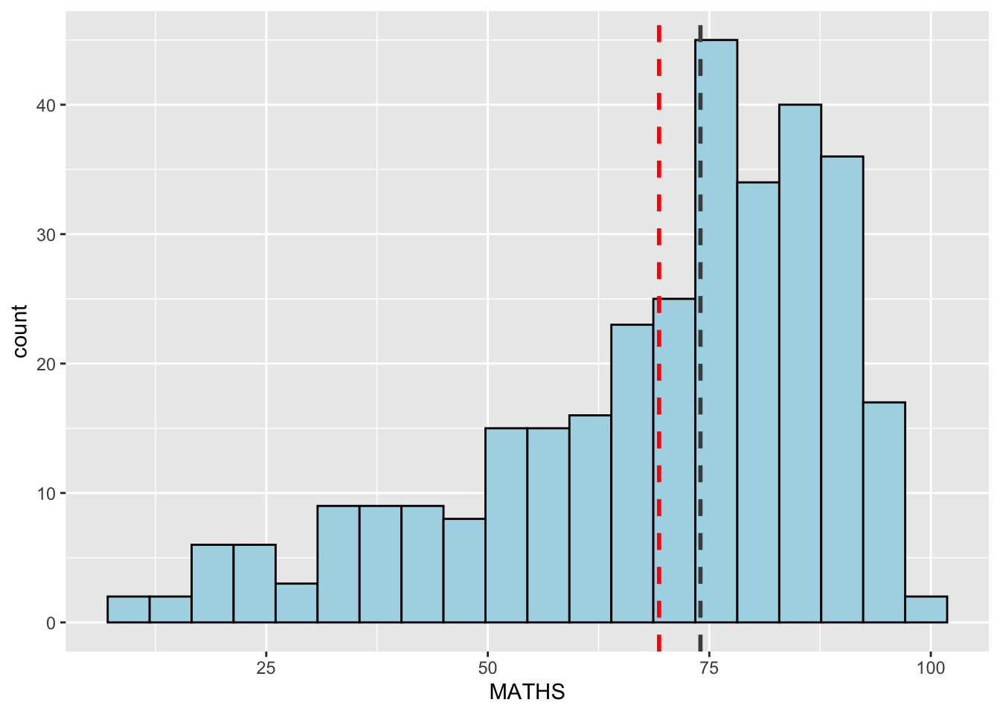
Designing Data-drive Graphics for Analysis III
The original design
The histograms on the left are elegantly designed but not informative. This is because they only reveal the distribution of English scores by gender but without context such as all pupils.
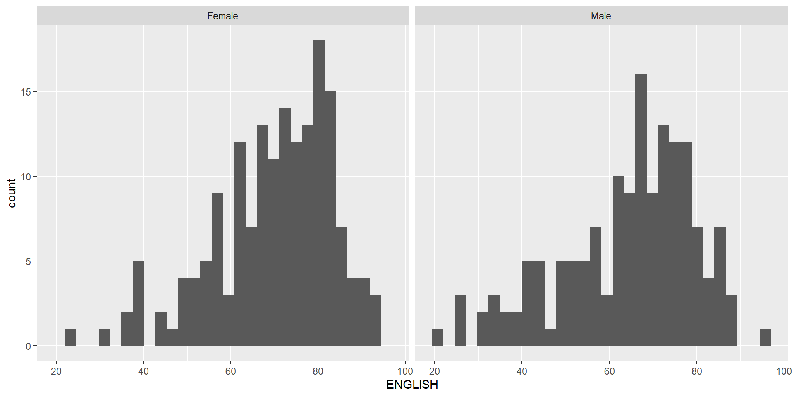
Important
Create a makeover looks similar to the figure below. The background histograms show the distribution of English scores for all pupils.
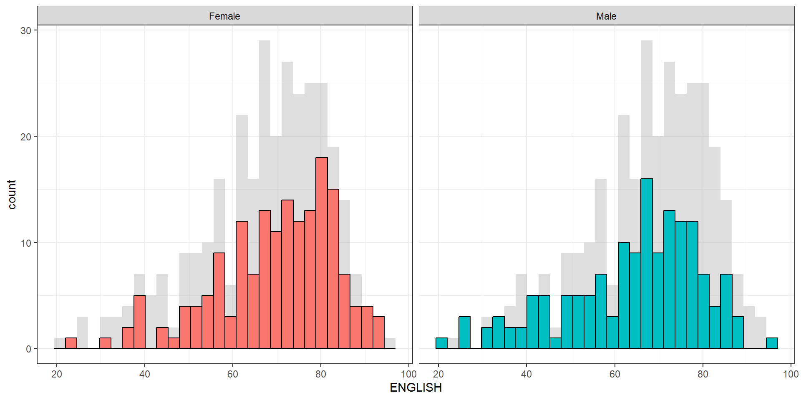
The code chunk
d <- exam_data
d_bg <- d[, -3]
ggplot(d, aes(x = ENGLISH, fill = GENDER)) +
geom_histogram(data = d_bg, fill = "grey", alpha = .5) +
geom_histogram(colour = "black") +
facet_wrap(~ GENDER) +
guides(fill = FALSE) +
theme_bw()Warning: The `<scale>` argument of `guides()` cannot be `FALSE`. Use "none" instead as
of ggplot2 3.3.4.`stat_bin()` using `bins = 30`. Pick better value with `binwidth`.
`stat_bin()` using `bins = 30`. Pick better value with `binwidth`.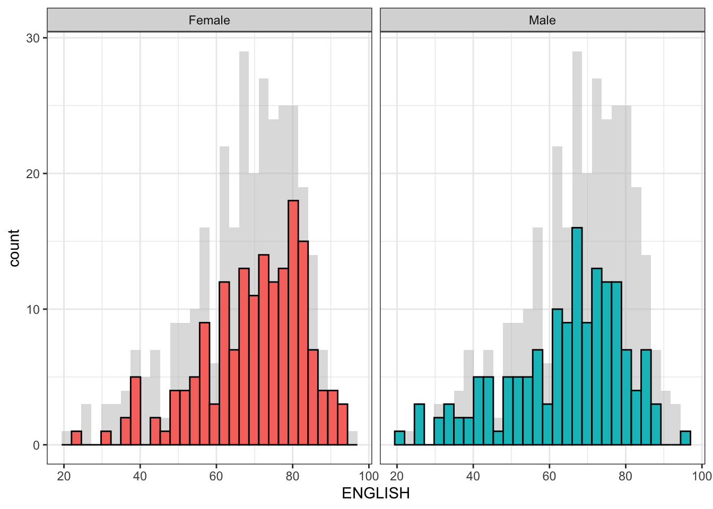
Designing Data-drive Graphics for Analysis IV
The original design.
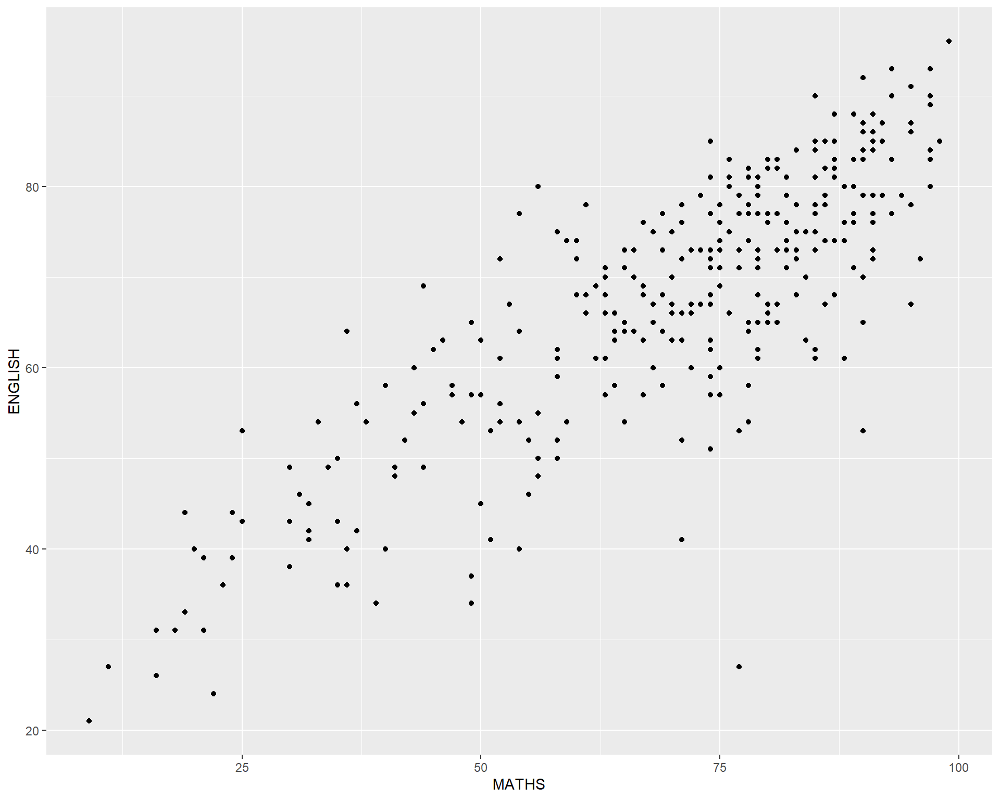
Important
Create a makeover looks similar to the figure on the right.
A within group scatterplot with reference lines.
ggplot(data=exam_data,
aes(x=MATHS, y=ENGLISH)) +
geom_point() +
coord_cartesian(xlim=c(0,100),
ylim=c(0,100)) +
geom_hline(yintercept=50,
linetype="dashed",
color="grey60",
size=1) +
geom_vline(xintercept=50,
linetype="dashed",
color="grey60",
size=1)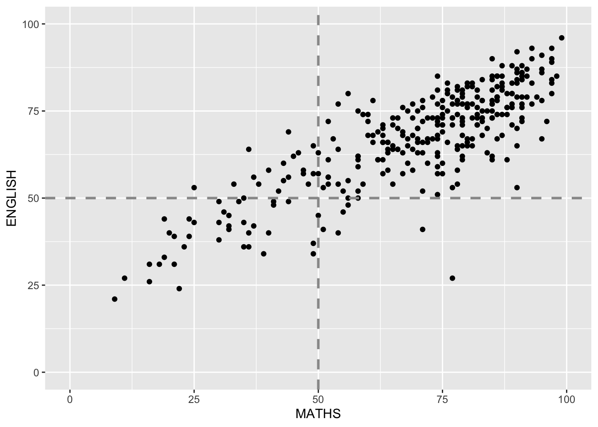
Reference
Hadley Wickham (2023) ggplot2: Elegant Graphics for Data Analysis. Online 3rd edition.
Winston Chang (2013) R Graphics Cookbook 2nd edition. Online version.
Healy, Kieran (2019) Data Visualization: A practical introduction. Online version